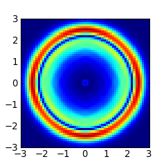
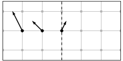
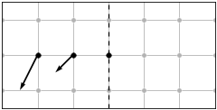
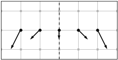
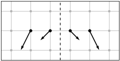
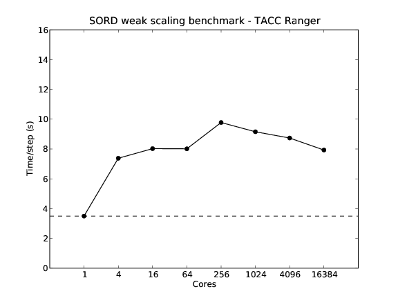

SORD

Contents
Summary
The Support Operator Rupture Dynamics (SORD) code simulates spontaneous rupture within a 3D isotropic viscoelastic solid. Wave motions are computed on a logically rectangular hexahedral mesh, using the generalized finite difference method of support operators. Stiffness and viscous hourglass corrections are employed to suppress suppress zero-energy grid oscillation modes. The fault surface is modeled by coupled double nodes, where the strength of the coupling is determined by a linear slip-weakening friction law. External boundaries may be reflective or absorbing, where absorbing boundaries are handled using the method of perfectly matched layers (PML). The hexahedral mesh can accommodate non-planar ruptures and surface topography
SORD simulations are configured with Python scripts. Underlying computations are coded in Fortran 95 and parallelized for multi-processor execution using Message Passing Interface (MPI). The code is portable and tested with a variety of Fortran 95 compilers, MPI implementations, and operating systems (Linux, Mac OS X, IBM AIX, SUN Solaris).
License
SORD is open-source and released under the GNU General Public License Version 3. You are free to use or redistribute the code, with the obligation that you contribute back any modification or derived works.
Publications
The first two papers give (for wave propagation and spontaneous rupture, respectively) the formulation, numerical algorithm, and verification of the SORD method. The third paper presents an application to simulating earthquakes in southern California.
Ely, G. P., S. M. Day, and J.-B. Minster (2008), A support-operator method for visco-elastic wave modeling in 3D heterogeneous media, Geophys. J. Int., 172(1), 331-344, doi: 10.1111/j.1365-246X.2007.03633.x. [PDF]
Ely, G. P., S. M. Day, and J.-B. Minster (2009), A support-operator method for 3D rupture dynamics, Geophys. J. Int., 177(3), 1140-1150, doi:10.1111/j.1365-246X.2009.04117.x. [PDF]
Ely, G. P., S. M. Day, and J.-B. Minster (2010), Dynamic rupture models for the southern San Andreas fault, BSSA, 100(1). [PDF] [Electronic supplement]
System requirements
- Fortran 95 compiler.
- Python, and NumPy (Numerical Python).
- (Optional) Message Passing Interface (MPI) library. Required for multi-core processing.
- (Optional) Matplotlib, SciPy, and Pyproj Python packages. Required for supplemental plotting, signal processing, and mesh generation utilities.
- (Optional) Bazaar version control system. Useful for SORD development and staying updated with the latest code version.
Installation
Fortran and MPI installation should only be necessary for laptops and workstations. HPC systems generally supply specifically tuned Fortran compilers and MPI libraries.
GNU Fortran is recommended if you don't already have a Fortran 95 compiler.
Fedora/Red Hat Linux:
sudo yum install gfortran
Ubuntu Linux:
sudo apt-get install gfortran
Mac OS X:
First install either the iPhone or the Mac-only version of Xcode available from Apple Developer Connection (free membership required). Then install the GNU Fortran version available from the R for Mac OS X Developer's Page (versions from MacPorts and Fink seem to be problematic and are not recommended).
MPICH2 is recommended if you need MPI. The following shell script installs MPICH2:
It is recommended that you install a private copy of Python for SORD. The following script installs Python and NumPy:
Enthought Python Distribution (EPD) is another option that includes many bells and whistles such as the Mayavi visualization package.
Download the SORD source code. The best option is use Bazaar version control, which facilitates applying code updates, and merging local modifications (see Source Control section for examples). The following script installs Bazaar, SORD, and SCEC CVM4.
Alternatively, download and unpack the source tar archive from here:
For laptop and workstation installations, the default system configuration is usually be adequate. To test the default configuration:
cd sord/ python configure.py
Systems with batch schedulers (such as PBS or LoadLeveler) generally require custom configuration to specify system resources, compiler options, and scheduler scripts. If SORD has already been configured for your system you can use one of the included configurations. For example, for the TeraGrid Ranger system at TACC:
python configure.py tacc-ranger
To see the list of included configurations look in the conf/ directory. Each custom configuration is located in a separate sub-directory. To create a new custom configuration, make a new sub-directory following the example of the supplied configurations.
Compile the code and setup the Python path by running:
python setup.py python setup.py path
User Guide
Quick test
Run a simple point source explosion test and plot a 2D slice of particle velocity:
cd scripts/example python sim.py -i python plot.py
Plotting requires Matplotlib, and the result should look like this:

Scripting with Python
For a simple example consider the above test, scripts/example/sim.py:
#!/usr/bin/env python
import sord # import the sord module
delta = 100.0, 100.0, 100.0, 0.0075 # step length in (x, y, z, t)
shape = 61, 61, 61, 60 # mesh size in (x, y, z, t)
fieldio = [ # field variable input and output
( '=', 'rho', [], 2670.0 ), # material density
( '=', 'vp', [], 6000.0 ), # material P-wave velocity
( '=', 'vs', [], 3464.0 ), # material S-wave velocity
( '=', 'gam', [], 0.3 ), # material viscosity
( '=w', 'v1', [0,0,31,-1], 'vx' ), # write X velocity slice output
( '=w', 'v2', [0,0,31,-1], 'vy' ), # write Y velocity slice output
]
ihypo = 31.0, 31.0, 31.0 # source location
source = 'potency' # source type
source1 = 1e6, 1e6, 1e6 # source normal components
source2 = 0.0, 0.0, 0.0 # source shear components
timefunction = 'brune' # source time function
period = 6 * delta[3] # source dominant period
sord.run( locals() ) # launch SORD job
Every script starts by importing the sord module. SORD parameters are specified as local variables that are passed to the sord.run() function by the locals() built-in Python function. A complete list of possible SORD parameters and default values are specified in parameters.py.
The Python language gives a powerful way to construct SORD input. For example, it may be desirable to specify the total simulation time, and divide by dt to determine the number of time steps:
T = 100.0 # total time temporary variable nt = int( T / dt ) # number of time steps
The T variable is not a valid SORD parameter; it is only sued for temporary storage. Variables with single single character names or names ending with an underscore, are ignored by sord.run(), so may be safely used for temporary storage. More elaborate example scripts can be found in the scripts directory.
Running jobs
Each time sord.run() is called, a run directory is created at the location set by the rundir parameter (tmp/ in this case). The directory contains the executable and scripts to run the code, and will contain all of the generated output and metadata. From the run directory, start the job interactively with the run.sh script:
tmp/run.sh
Or, submit the job to the batch system with the queue.sh script
tmp/queue.sh
Output (and large input, such as the material model) is stored in flat binary binary files. Statistic, such as peak acceleration and peak velocity, are computed periodically during each run and stored in the stats/ directory.
Field I/O
Multidimensional field arrays can be accessed for input and output through the fieldio list. The fieldnames.py file specifies the list of available field variables, which are categorized in four ways: (1) static vs. dynamic, (2) settable vs. output only, (3) node vs. cell registration, and (4) volume vs. fault surface. For example, density rho is a static, settable, cell, volume variable. Slip path length sl is a dynamic, output, node, fault variable. The fieldio list is order dependent with subsequent inputs overwriting previous inputs. So, for example, a field may be assigned to one value for the entire volume, followed by a different value for a sub-region of the volume.
All field I/O operations require slice indices [j,k,l,t], which specify a four-dimensional sub-volume of the array in space and time. Array indexing starts at 1 for the first node, and 1.5 for the first cell. Negative indices count inward from end of the array, starting at -1 for the last node, and -1.5 for the last cell. Indices can be either a single index, a range (start, end), or a strided range (start, end, step). Empty parentheses () are shorthand for a full range. Empty brackets [] are shorthand for the entire 4D volume. Some examples of slice notation:
[10, 20, 1, (1,-1)] # Single node, full time history [10.5, 20.5, 1.5, ()] # Single cell, full time history [2, (), (), (1,-1,10)] # j=2 node surface, every 10th time step [(), (), (), -1] # Full 3D volume, last time step [] # Entire 4D volume
Each member of the fieldio list contains a mode, a field name, and slice indices, followed by mode dependent parameters. The following I/O modes are available, where 'f' is the field variable name (from the list fieldnames.py), and [] are the slice indices:
('=', 'f', [], val), # Set f to value
('+', 'f', [], val), # Add value to f
('=s', 'f', [], val), # Set f to random numbers in range (0, val)
('=f', 'f', [], val, tfunc, T), # Set f to time function with period T, scaled by val
('=r', 'f', [], filename), # Read from filename into f
('=R', 'f', [], filename), # Read from filename into f with exrapolation.
('=w', 'f', [], filename), # Write f to filename
('=wi', 'f', [], filename), # Write weighted average of f to filename.
A letter 'i' in the mode indicates sub-cell positioning via weighted averaging. In this case the spatial indices are single logical coordinates that may vary continuously over the range. The fractional part of the index determines the weights. For example, an index of 3.2 to the 1D variable f would specify the weighted average: 0.8 * f(3) + 0.2 * f(4).
Reading and writing to disk uses flat binary files where j is the fastest changing index, and t is the slowest changing index. Mode 'R' extrapolates any singleton dimensions to fill the entire array. This is useful for reading 1D or 2D models into 3D simulations, obviating the need to store (possibly very large) 3D material and mesh coordinate files.
All input modes may use '+' instead of '=' to add to, rather than replace, preexisting values. For a list of available time functions, see the time_function subroutine in src/util.f90. The routine can be easily modified to add new time functions. Time functions can be offset in time with the tm0 initial time parameter.
Boundary Conditions
Boundary conditions for the six faces of the model domain are specified by the parameters bc1 (near-size, x, y, and z faces) and bc2 (far-side, x, y, and x faces). The symmetry boundary conditions can be use to reduce computations for problems where they are applicable. These are not used for specifying internal slip boundaries. However, for problems with symmetry across a slip surface, the fault may be placed at the boundary and combined with an anti-mirror symmetry condition. The following BC types are supported:
Type 0: Vacuum free-surface. Stress is zero in cells outside the boundary.

Type 3: Rigid surface. Displacement is zero at the boundary.

Type 1: Mirror symmetry at the node. Normal displacement is zero at the boundary. Useful for a boundary corresponding to (a) the plane orthogonal to the two nodal planes of a double-couple point source, (b) the plane normal to the mode-III axis of a symmetric rupture, or (c) the zero-width axis of a 2D plane strain problem.

Type -1: Anti-mirror symmetry at the node. Tangential displacement is zero at the boundary. Useful for a boundary corresponding to (a) the nodal planes of a double-couple point source, (b) the plane normal to the mode-II axis of a symmetric rupture, or (c) the zero-width axis of a 2D antiplane strain problem.

Type 2: Mirror symmetry at the cell. Same as type 1, but centered on the cell.

Type -2: Anti-mirror symmetry at the cell. Same as type -1, but centered on the cell. Can additionally be used when the boundary corresponds to the slip surface of a symmetric rupture.

Type 10: Perfectly match layer (PML) absorbing boundary.
Example: a 3D problem with a free surface at Z=0, and PML absorbing boundaries on all other boundary faces:
nn = 50, 50, 50 bc1 = 10, 10, 0 bc2 = 10, 10, 10
Example: a 2D antiplane strain problem with PML absorbing boundaries. The number of nodes is 2 for the zero-width axis:
nn = 50, 50, 2 bc1 = 10, 10, -1 bc2 = 10, 10, -1
Defining the fault rupture surface
Fault rupture always follows a surface of the (possibly non-planar) logical mesh. The orientation of the fault plane is defined by the faultnormal parameter. This can be either 1, 2, or 3 corresponding to surfaces normal to the j, k, or l logical mesh directions. Any other value (typically 0) disables rupture altogether. The location of the rupture plane with in the mesh is determined by the ihypo parameter, which has a dual purpose of also defining the nucleation point. So, the indices of the collocated fault double nodes are given by int(ihypo(faultnormal)), and int(ihypo(faultnormal)) + 1. For example, a 3D problem of dimensions 200.0 x 200.0 x 200.0, with a fault plane located at z = 100.0, and double nodes at l = (21, 22), may be set up as such:
dx = 5.0 faultnormal = 3 ihypo = 21, 21, 21.5 nn = 41, 41, 42 bc1 = 0, 0, 0 bc2 = 0, 0, 0
For problems with symmetry across the rupture surface (where mesh and material properties are mirror images), the symmetry may be exploited for computational savings by using an appropriate boundary condition and solving the elastic equations for only one side of the fault. In this case, the fault double nodes must lie at the model boundary, and the and the cell-centered anti-mirror symmetry condition used. For example, reducing the size of the previous example to put the rupture surface along the far z boundary:
nn = 41, 41, 22 bc2 = 0, 0, -2
Alternatively, put the rupture surface along the near z boundary:
ihypo = 21, 21, 1.5 nn = 41, 41, 22 bc1 = 0, 0, -2 bc2 = 0, 0, 0
Further symmetries may present. If our previous problem has slip only in the x direction, then we may also use node-centered mirror symmetry along the in-plane axis, and node-centered anti-mirror symmetry along the anti-plane axis, to reduce computations eight-fold:
ihypo = 21, 21, 21.5 nn = 21, 21, 22 bc1 = 0, 0, 0 bc2 = -1, 1, -2
Memory Usage and Scaling
For rectilinear meshes, 23 single precision (four-byte) memory variables are required per mesh point. Curvilinear meshes have two options with a trade-off in memory usage vs. floating-point operations. Stored operators require 44 variables per mesh point and give the best performance, while on-the-fly operators require 23 variables per mesh point at the cost of a factor of four increase in floating point operations. As CPU improvement tends to out-pace memory bandwidth improvement, in the future, on-the-fly operators may become faster than stored operators. The operator type is controlled by the oplevel parameter, but can generally be left alone, as the default is to automatically detect rectilinear and curvilinear meshes and assign the proper operator type for fastest performance.
On current hardware, computation time is on the order of the one second per time step per one million mesh points. SORD scalability has been benchmarked up to 16 thousand processors at the TACC Ranger facility. The following chart is the wall-time per step for 8 million mesh points per core (click for PDF):
This benchmark tests computation only. For many applications, disk output is the primary bottleneck and will limit scalability. When configuring domain decomposition, it is important to minimize the number of cores accessing a particular file. For example, if output is required for the entire ground surface, maximizing the number of domain partitions in the vertical direction will minimize the number of cores participating in I/O.
Development
Suggestions for improvements, and contributions to the SORD code and documentation are greatly appreciated.
Debugging
The debug input parameter is useful for finding problems, and can take the following values:
0: Debugging off.
1: Verbose status output.
2: Synchronize multiple processors. This is useful for tracking down MPI related bugs.
3: Dump field variable output in text files at every step. Only do this for small tests or you will fill up your disk!
During testing, compiler checks, such as array overflow and floating-point exceptions, can be turned on with the -t or --testing option. Additionally, to compile and run under a debugger use the -g or --debugging option. Naturally, these options depend on the capabilities of the particular compiler. The specific flags passed to the compiler can be configured by editing conf.py.
Profiling
Internal code timings, for benchmarking performance, are collected and saved to the prof/ directory. The file format is flat binary that can be examined with the UNIX command od -f. Eight categories are timed for every time iteration step, and save in the following files:
1time: Time integration subroutine.
2stress: Stress subroutine.
3accel: Acceleration subroutine, including multiprocessor halo swapping communications.
4stats: Statistics subroutine, including multiprocessor min/max reductions.
5ckpt: Checkpoint subroutine.
6mp: Aggregate of all multiprocessor operations, including halo swap, global reductions, and parallel I/O.
7io: Aggregate of all input and output operations, including checkpointing and field I/O.
8step: Total for complete time iteration.
Profiling can be very difficult to interpret for multiprocessor runs. Timing is only saved for the master processor. It can be helpful to synchronize the processors using debug = 2 to give more accurate relative timing values.
Additionally, SORD can be run with compiler generated code profiling using the -p or --profiling option.
Source control
We use Bazaar for version control. Some examples:
Apply any recent updates from the repository, overwriting any local changes. This is a way to keep up-to-date with the latest code.
bzr pull bzr revert
See code changes since the last commit
bzr diff
Commit changes
bzr commit -m "Great new feature"
Create a patch
bzr send -o great-new-feature.patch
See the Bazaar tutorials for more.